SWISHBY 가이드
SWISHBY는 탭 한 번으로 나는 아케이드 비행 게임입니다. 첫 판부터 콤보·대시·모드·성장까지 실제 게임 화면과 함께 설명합니다.
1. 시작하기
첫 화면에서 기체를 고르고 PLAY NOW를 누르면 바로 시작합니다. 로그인 없이 게스트로 플레이할 수 있고, 진행은 이 기기에 저장됩니다(9장 참고).
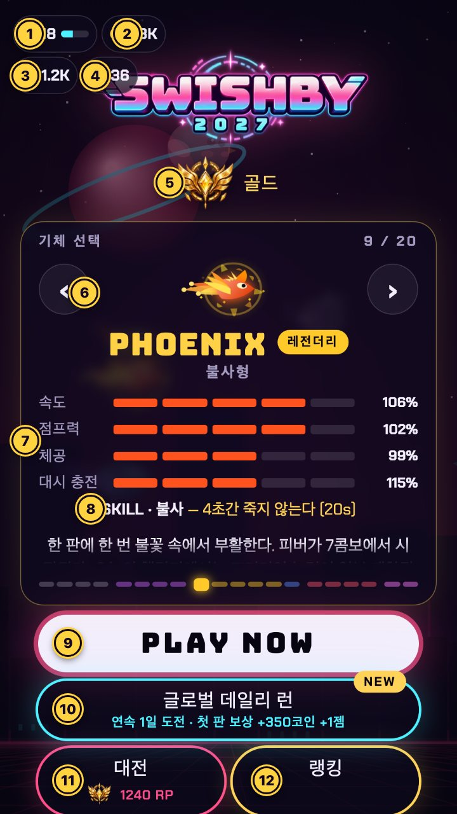
| 번호 | 이름 | 하는 일 |
|---|---|---|
| 1 | 레벨 | 플레이어 레벨과 경험치 바. 100 XP마다 레벨업 |
| 2 | 코인 | 기본 재화. 스테이지 점수와 필드 오브로 모음 |
| 3 | 다이아몬드 | 레벨업·데일리 첫 판·스테이지 첫 클리어 보상 |
| 4 | 젬 | 희귀 재화. 스테이지에서 게이트마다 1% 확률로 떨어짐 |
| 5 | 대전 티어 | 대전 점수(RP)로 정해지는 등급. 브론즈부터 반신까지 7단계 |
| 6 | 기체 선택 | 좌우 화살표(키보드 ←/→)로 기체를 바꿈. 오른쪽 위 숫자는 몇 번째 기체인지 |
| 7 | 능력치 | 속도·점프력·체공·대시 충전 4가지 |
| 8 | SKILL | 기체마다 다른 고유 스킬과 재사용 시간 |
| 9 | PLAY NOW | 스테이지 선택으로 이동. 처음 한 번은 튜토리얼 판이 시작됨 |
| 10 | 글로벌 데일리 런 | 전 세계가 같은 코스로 겨루는 일일 챌린지. 연속 일수와 첫 판 보상 표시 |
| 11 | 대전 | 1v1·2v2·FFA 대전과 내 RP |
| 12 | 랭킹 | 오늘·전체·대전 순위표 |
화면 아래쪽의 ? 버튼을 누르면 게임 안 도움말(조작·점수·방해 아이템·재화·유닛 요약)을 볼 수 있습니다.
2. 기본 조작
화면을 탭할 때마다 기체가 한 번 날갯짓합니다. 가만히 두면 떨어지고, 게이트(위아래 네온 기둥) 사이 틈을 지나면 점수가 올라갑니다. 기둥이나 바닥에 닿으면 판이 끝납니다.
첫 판은 튜토리얼입니다. 처음 PLAY NOW를 누르면 스테이지 1이 시작되고 안내 문구가 3단계로 나옵니다.
- 출발 직후: 「화면을 탭해서 날아오르세요」
- 날갯짓 3번 후: 「게이트 가장자리를 아슬아슬하게 스치면 PERFECT!」
- 게이트 3개 통과 후: 「게이지가 차면 DASH, SKILL 버튼으로 고유 스킬!」 — 이때 대시 게이지와 스킬이 한 번 가득 채워져서 바로 써 볼 수 있습니다.
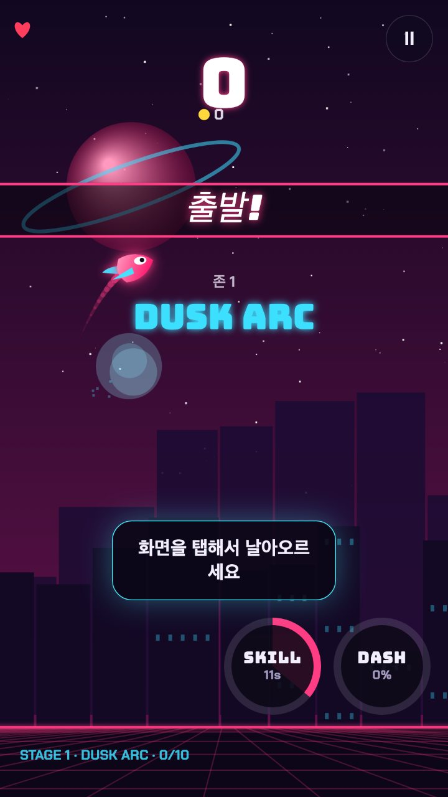
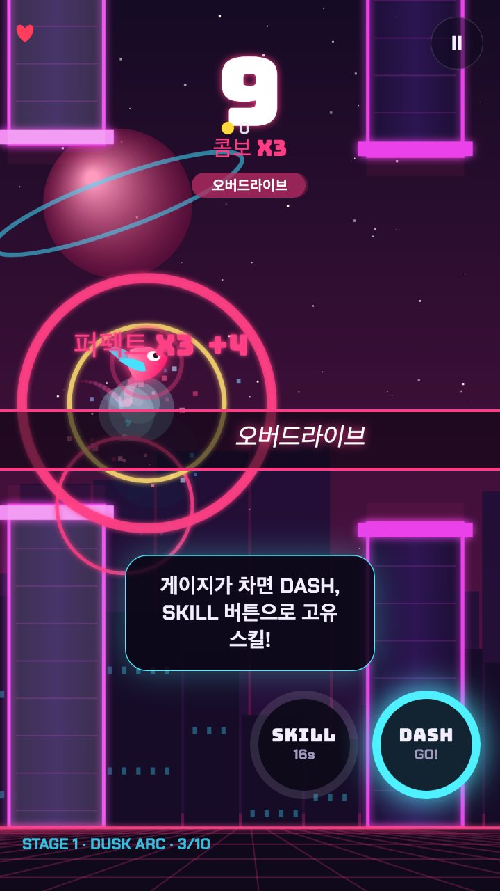
처음 3판은 루키 보정이 들어갑니다(스테이지 1만). 첫 게이트 3개의 틈이 더 넓고, 첫 게이트가 조금 늦게 나오며, 바닥에 닿아도 2번까지는 튕겨 올라옵니다.
플레이 화면 읽기
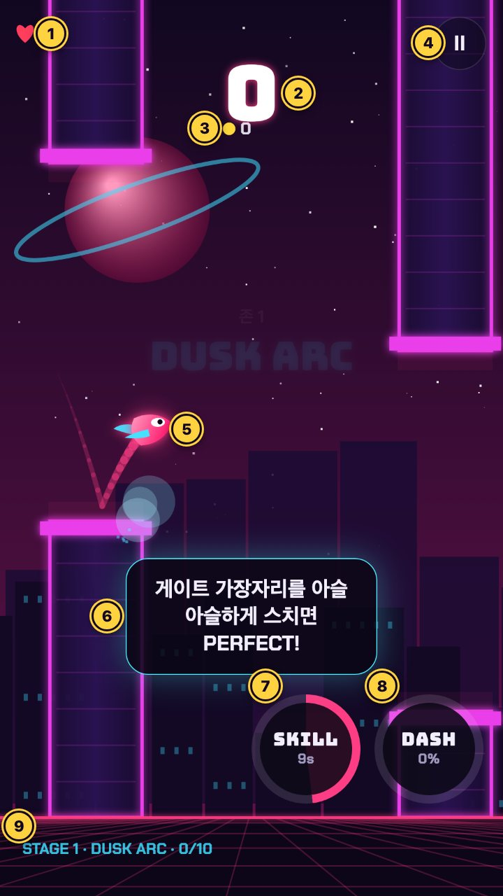
| 번호 | 이름 | 뜻 |
|---|---|---|
| 1 | 하트 | 체력. 기본 1칸 + 실드 1개마다 1칸(실드는 부딪힘 1번을 막아 줌) |
| 2 | 점수 | 이번 판 점수 |
| 3 | 코인 | 이번 판에 모은 코인 |
| 4 | 일시정지 | 탭 또는 P / Esc |
| 5 | 기체 | 내 기체. 뒤에 날갯짓 궤적이 남음 |
| 6 | 게이트 | 위아래 기둥 사이 틈을 통과 |
| 7 | SKILL | 기체 고유 스킬. 숫자는 남은 재사용 시간 |
| 8 | DASH | 대시 게이지(%). 100%가 되면 GO! |
| 9 | 진행 | 스테이지 번호 · 구역 · 통과한 게이트/목표 게이트 |
키보드 단축키 (PC)
| 동작 | 키 | 터치 |
|---|---|---|
| 날갯짓 | Space, ↑, W | 화면 탭 |
| 대시 | Shift, D, E | DASH 버튼 |
| 스킬 | S, Q | SKILL 버튼 |
| 궁극기(울트라 기체, 스테이지 전용) | A, F | ULT 버튼 |
| 일시정지 | P, Esc | Ⅱ 버튼 |
| 기체 바꾸기(첫 화면) | ←, → | 좌우 화살표 |
3. 점수 올리기: PERFECT·콤보·피버
점수는 게이트를 얼마나 아슬아슬하게 지나느냐로 갈립니다. 틈 한가운데로 지나면 1점뿐이지만, 가장자리를 스치면 PERFECT가 되고 콤보가 쌓일수록 한 번에 받는 점수가 커집니다.
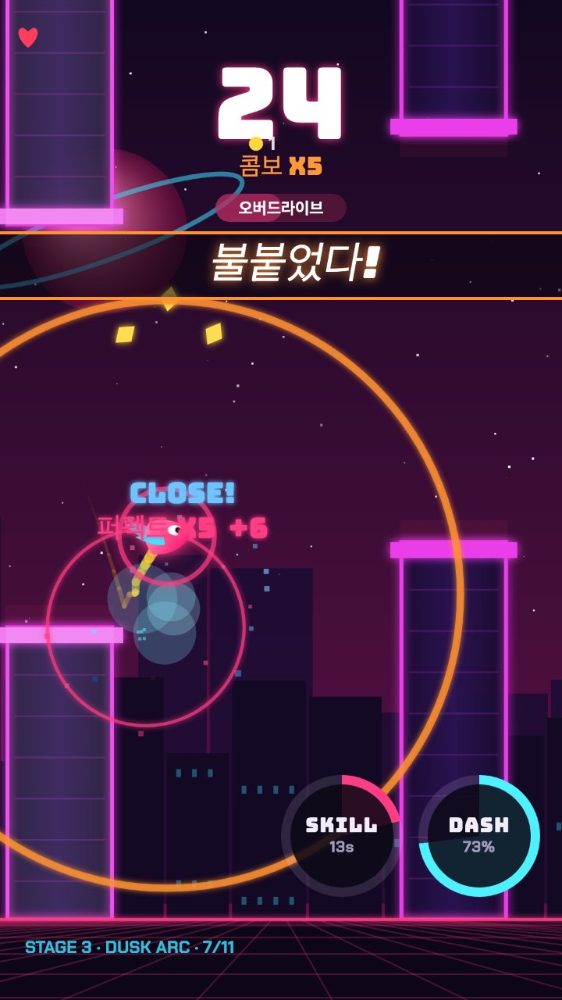
| 판정 | 조건 | 얻는 것 | 콤보 |
|---|---|---|---|
| 통과 | 틈을 여유 있게 지남 | 1점, 대시 게이지 +8% | 0으로 끊김 |
| PERFECT | 게이트 가장자리를 아슬아슬하게 스침 | (1 + 콤보 + 기체 보너스) × 피버 배율, 대시 게이지 +34% | 1 오름 |
| 페이즈 | 대시로 게이트를 뚫고 지남 | +2점 | 그대로 |
- PERFECT 점수 예: 콤보 3에서 PERFECT면 +4, 콤보 5에서는 +6. 화면에 「퍼펙트 X3 +4」처럼 표시됩니다.
- 콤보 5: 「불붙었다!」 배너가 뜹니다.
- 콤보 10: 피버 타임. 점수가 2배가 됩니다. 시간 제한은 없고, PERFECT가 아닌 게이트를 하나 지나는 순간 「콤보 끊김」과 함께 끝납니다.
- PERFECT 판정 폭은 기체마다 다릅니다. 예를 들어 NIMBUS는 VOLT·BLITZ·TITAN보다 폭이 넓고, BLITZ는 PERFECT마다 보너스 +1점이 붙습니다.
- 글로벌 데일리 런과 대전에서는 공정하게 모두 콤보 10에서 피버 2배로 맞춰집니다.
팁: 게이트 바로 앞에서는 탭을 쉬고, 아래 기둥 위 끝에 살짝 붙어 지나가면 PERFECT가 가장 안정적으로 나옵니다.
4. 대시: 벽을 뚫고 지나기
대시 게이지가 100%가 되면 DASH 버튼에 GO!가 뜨고, 누르면 앞의 게이트를 그대로 뚫고 지나갑니다. 뚫고 지나는 동안에는 부딪혀도 죽지 않습니다.
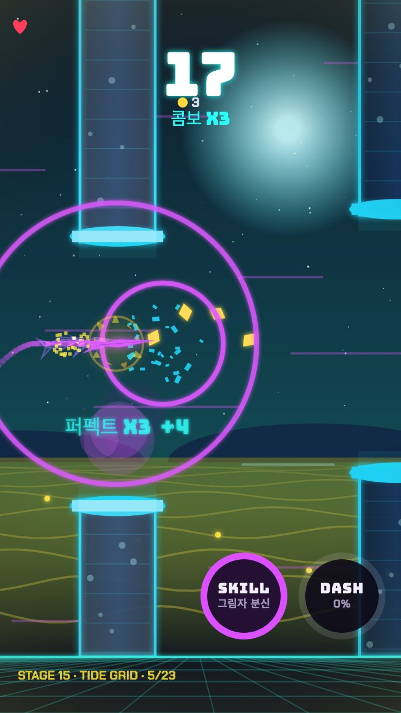
| 게이지를 채우는 방법 | 오르는 양 |
|---|---|
| PERFECT | +34% |
| 일반 통과 | +8% |
| 코인 오브 먹기 | +5% |
| 대시로 뚫은 게이트 | 0% |
- 기본 능력치라면 PERFECT 3번(34% × 3)으로 가득 찹니다. 기체의 대시 충전 능력치가 높을수록 더 빨리 찹니다(예: TITAN은 1.4배, BLITZ는 0.85배).
- 대시는 약 0.55초 동안 이어지고, 그동안 무적입니다. 뚫고 지난 게이트는 「페이즈 +2」점이고 콤보는 그대로 유지됩니다.
- 쓰는 타이밍: 틈을 도저히 못 맞출 것 같은 게이트 바로 앞에서 누르세요. 너무 일찍 누르면 게이트에 닿기 전에 끝납니다.
SKILL과 ULT
- SKILL: 기체마다 다른 고유 스킬입니다. 버튼의 숫자(예: 13s)가 남은 재사용 시간이고, PERFECT로도 충전됩니다. 예를 들어 VOLT의 「오버드라이브」는 재사용 16초, 3초간 유지됩니다.
- ULT(궁극기): 울트라 등급 기체에만 있는 세 번째 버튼입니다. 게이트를 지날 때마다 차고 PERFECT면 더 빨리 차며, 스테이지에서만 쓸 수 있습니다.
5. 파워업·구역·방해 아이템
게이트 6개를 지나면 게이트 사이에 파워업이 나오기 시작합니다(게이트마다 약 14% 확률). 닿기만 하면 바로 적용됩니다.
| 파워업 | 효과 | 시간 | 나오는 비율 |
|---|---|---|---|
| 자석 | 주변 코인을 끌어당김 | 7초 | 40% |
| 실드 | 부딪힘 1번을 막아 줌(하트 1칸 추가) | 막을 때까지 | 20% |
| 슬로모션 | 게임 속도가 0.7배로 느려짐 | 3초 | 20% |
| 무적 질주 | 무적 + 속도 1.2배 | 3초 | 20% |
구역 4개
배경과 게이트 규칙이 다른 4개 구역이 있습니다. 스테이지에서는 난이도별로 구역이 정해져 있고, 글로벌 데일리 런과 대전에서는 게이트 12개마다 다음 구역으로 넘어갑니다.
| 구역 | 난이도 | 스테이지 | 특징 |
|---|---|---|---|
| DUSK ARC | ★ 쉬움 | 1–10 | 넓은 틈 |
| TIDE GRID | ★★ 일반 | 11–25 | 좁은 틈 |
| SOLAR VEIN | ★★★ 보통 | 26–40 | 더 좁은 틈, 0.5초 안개 |
| NULL VOID | ★★★★ 어려움 | 41–50 | 가장 좁은 틈, 2초 안개, 2초 안에 탭 |
뒤쪽 구역일수록 위아래로 움직이거나 틈이 숨 쉬듯 벌어졌다 좁아지는 게이트가 늘어납니다. NULL VOID에서는 2초 동안 탭을 안 하면 「엔진 정지!」로 콤보가 0이 됩니다.
방해 아이템 (스테이지 11부터)
붉은 테두리의 검은 가시 원반이 게이트 사이에 나옵니다. 닿으면 아래 넷 중 하나에 걸립니다. 실드가 있거나 대시·무적 중이면 아무 일 없이 터집니다.
| 방해 | 효과 |
|---|---|
| 과속 | 3초간 빨라짐 |
| 무게추 | 3초간 무거워짐 |
| 연막 | 2.5초간 안개 |
| 방전 | 대시 게이지·스킬 충전·콤보가 0 |
6. 게임 모드
플레이할 수 있는 모드는 스테이지·글로벌 데일리 런·대전 세 가지입니다. PLAY NOW는 스테이지 선택으로 연결됩니다.
| 스테이지 | 글로벌 데일리 런 | 대전 | |
|---|---|---|---|
| 들어가기 | PLAY NOW | 첫 화면 하늘색 버튼 | 첫 화면 「대전」 |
| 목표 | 목표 게이트 수 통과(클리어) | 오늘 최고 점수 | 상대보다 높은 점수 |
| 코스 | 스테이지마다 고정 | 전 세계 같은 코스, 매일 09:00(한국 시간) 교체 | 참가자가 같은 코스 |
| 기체 능력 | 그대로 | 공정 모드(일부 제한) | 공정 모드(일부 제한) |
| 보상 | 코인·첫 클리어 보상·젬 | 첫 판 보상·연속 보너스 | RP(대전 점수)·시즌 보상 |
스테이지 (50개)
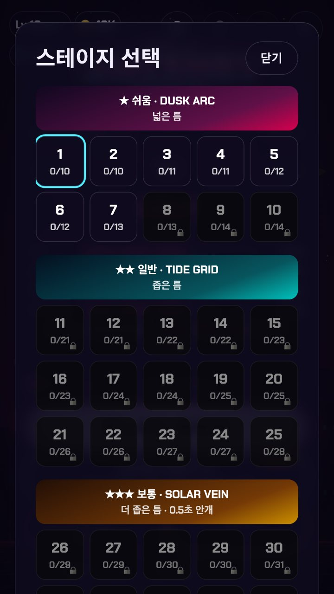
- 난이도 4단계에 10·15·15·10개씩, 모두 50개입니다(구역은 5장 표 참고).
- 칸의 두 번째 숫자가 목표 게이트 수입니다. 스테이지 1–2는 10개로 시작해 두 스테이지마다 1개씩 늘고, 난이도가 올라갈 때 크게 뜁니다(스테이지 11은 21개).
- 목표를 넘기면 클리어되고 다음 스테이지가 열립니다. 판은 그 뒤로도 계속되니 점수를 더 모을 수 있습니다.
- 부딪히면 한 판에 한 번, 점수가 3 이상일 때 200코인으로 이어하기를 고를 수 있습니다(스테이지 전용).
글로벌 데일리 런
- 전 세계 플레이어가 날마다 같은 코스를 날고, 매일 한국 시간 오전 9시(UTC 0시)에 바뀝니다.
- 하루 첫 판을 끝내면 보상을 받습니다. 연속으로 할수록 코인이 늘고, 3일·7일째에는 젬이 더 붙습니다(7장 표 참고).
- 순위표는 「오늘」 탭에서 상위 50명을 보여 줍니다.
- 공정 모드라 비싼 기체의 특수 능력(부활, 여러 개의 실드 등)이 제한되고, 피버도 모두 콤보 10에서 2배입니다.
대전
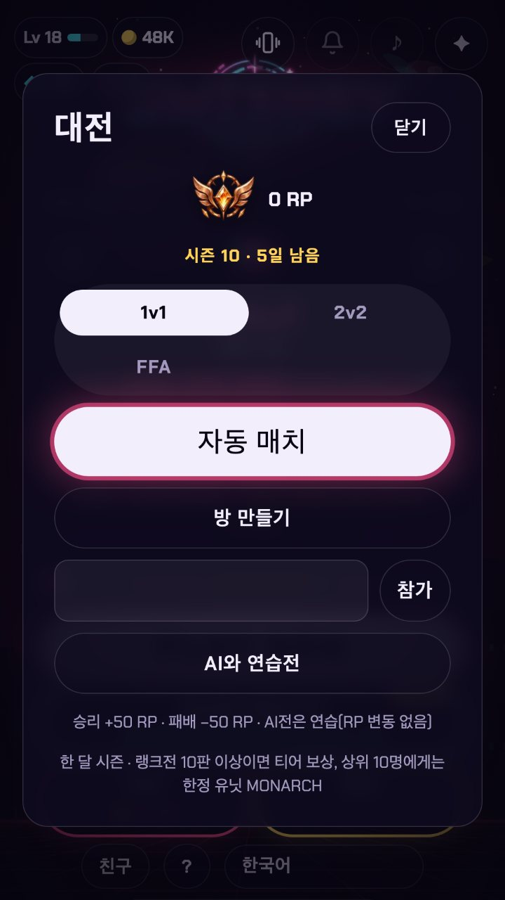
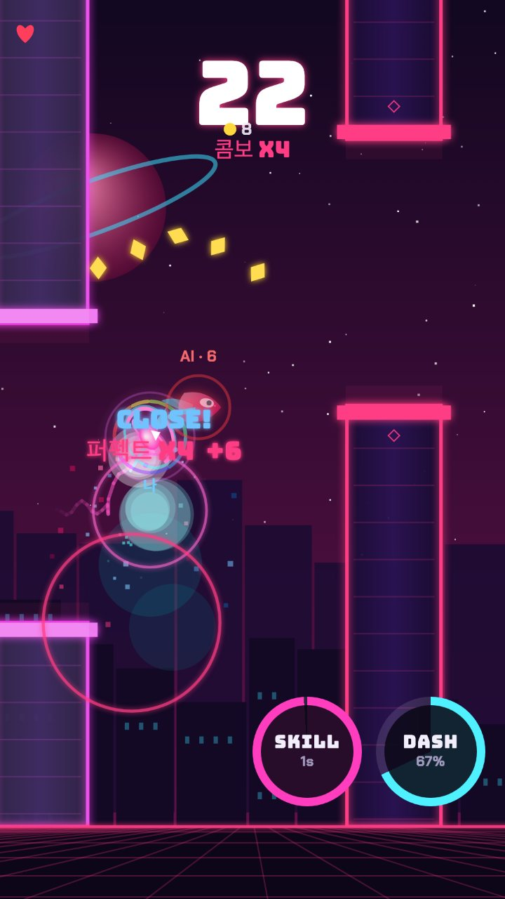
| 방식 | 사람 수 | 승패 | RP |
|---|---|---|---|
| 1v1 | 2명 | 점수가 높은 쪽 | 승리 +50, 패배 −50 |
| 2v2 | 4명(2팀) | 팀 점수 합 | 승리 +50, 패배 −50 |
| FFA | 4명 | 등수 | 1등 +50, 2등 +20, 3등 −20, 4등 −50 |
| AI와 연습전 | 나 + AI | 점수 | 변동 없음 |
- 자동 매치: 60초 동안 상대를 찾고, 못 찾으면 AI 연습전으로 이어집니다(RP 변동 없음).
- 방 만들기 / 참가: 방을 만들면 4자리 코드가 나오고, 친구는 그 코드를 입력해 들어옵니다.
- 같은 상대와는 하루 5판까지만 RP가 반영됩니다.
7. 기체와 성장
격납고에는 기체 20종이 있고, 기본 4종은 처음부터 무료입니다. 나머지는 코인·다이아몬드·젬 세 가지를 함께 내고 삽니다.
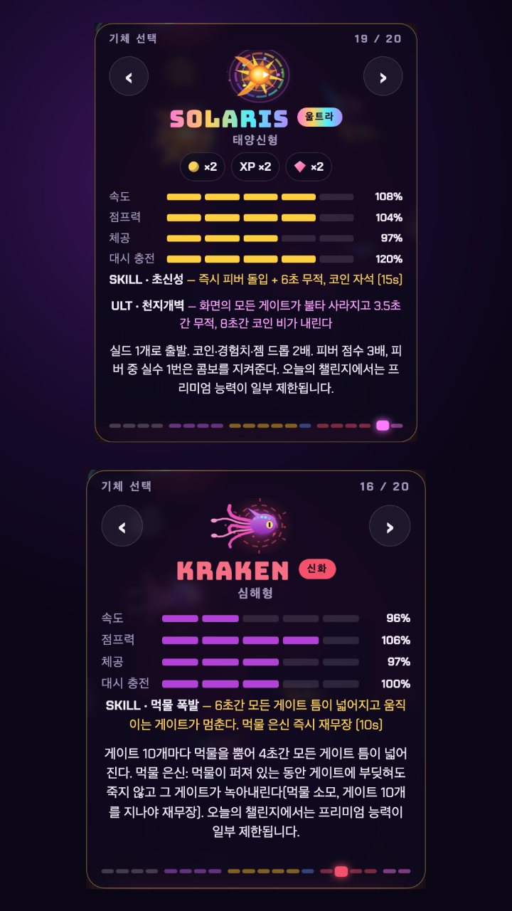
- 등급: 기본 → 에픽 → 레전더리 → 신화 → 울트라 순으로 높아집니다. 모든 기체에 고유 스킬이 있고, 울트라는 궁극기(ULT)까지 있습니다.
- 능력치 4종: 속도 · 점프력 · 체공 · 대시 충전(100%가 기준).
- 카드 아래 설명: 그 기체만의 특수 능력입니다(예: PHOENIX는 한 판에 한 번 부활). 글로벌 데일리 런과 대전에서는 공정하게 일부가 제한됩니다.
| 등급 | 코인 | 다이아몬드 | 젬 |
|---|---|---|---|
| 기본 | 무료 | 무료 | 무료 |
| 에픽 | 40,000 | 10,000 | 15 |
| 레전더리 | 90,000 | 22,000 | 25 |
| 신화 | 100,000 | 33,000 | 40 |
| 울트라 | 150,000 | 40,000 | 100 |
MONARCH는 살 수 없고, 대전 시즌 상위 10명에게만 주는 한정 기체입니다.
재화 모으기
| 재화 | 얻는 방법 | 양 |
|---|---|---|
| 코인 | 스테이지 점수 | 10점마다 30 / 40 / 55 / 67 (쉬움 / 일반 / 보통 / 어려움) |
| 코인 | 필드 오브 | 1개에 5 |
| 코인 + 다이아몬드 | 스테이지 첫 클리어 | (100 + 10 × 스테이지 번호) × 5 코인 + 200 / 375 / 575 / 750 다이아(난이도별) |
| 코인 + 다이아몬드(+젬) | 레벨업 | 250 코인 + 250 다이아, 5레벨마다 젬 1 |
| 코인 + 다이아몬드 + 젬 | 글로벌 데일리 런 하루 첫 판 | 300 + 50 × 연속 일수(최대 7) 코인, 100 다이아, 젬 1(연속 3일부터 2, 7일부터 4) |
| 젬 | 스테이지 플레이 | 게이트마다 1% 확률 |
경험치(XP)는 한 판에 통과 게이트 + PERFECT × 2 + 점수 ÷ 10만큼 쌓이고, 100 XP마다 레벨이 오릅니다.
결과 화면 읽기
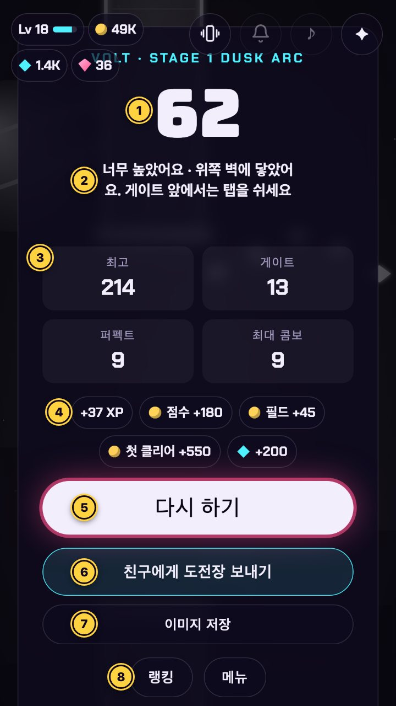
| 번호 | 내용 |
|---|---|
| 1 | 이번 판 점수 |
| 2 | 실패 원인과 다음 판 요령(예: 「너무 높았어요 · 위쪽 벽에 닿았어요」) |
| 3 | 최고 점수 · 통과 게이트 · PERFECT 수 · 최대 콤보 |
| 4 | 이번 판 보상: XP, 점수 코인, 필드 코인, 첫 클리어 코인·다이아 |
| 5 | 다시 하기 |
| 6 | 친구에게 도전장 보내기(내 점수가 담긴 링크) |
| 7 | 결과 이미지 저장 |
| 8 | 랭킹 · 메뉴 |
위 화면은 스테이지 1에서 62점을 낸 판입니다. 계산해 보면 XP는 게이트 13 + PERFECT 9 × 2 + 62 ÷ 10(6) = 37, 점수 코인은 6 × 30 = 180, 필드 코인은 오브 9개 × 5 = 45, 첫 클리어는 (100 + 10) × 5 = 550 코인과 200 다이아로 화면과 같습니다.
8. 랭킹·시즌·친구
랭킹은 세 탭으로 나뉩니다. 대전 시즌은 한 달 단위로 돌아가고, 매월 1일 00:00(한국 시간)에 정산됩니다.
| 탭 | 보여 주는 것 | 인원 |
|---|---|---|
| 오늘 | 글로벌 데일리 런 오늘 점수 | 상위 50명 |
| 전체 | 역대 최고 점수 | 상위 50명 |
| 대전 | 이번 시즌 RP | 상위 100명 |
대전 티어와 시즌 보상
| 티어 | 필요한 RP |
|---|---|
| 브론즈 | 0 |
| 실버 | 400 |
| 골드 | 1,000 |
| 플래티넘 | 2,000 |
| 다이아 | 3,600 |
| 넘사 | 5,600 |
| 반신 | 8,000 |
- 한 시즌에 랭크전을 10판 이상 하면 시즌이 끝날 때 티어에 맞는 보상을 받습니다.
- 상위 10명에게는 한정 기체 MONARCH가 주어집니다.
- AI 연습전은 RP에 반영되지 않습니다.
친구·초대·도전장
- 친구: 첫 화면 아래 「친구」에서 내 친구 코드를 복사해 보내거나 상대 코드를 입력해 친구 요청을 보냅니다. 친구가 접속하면 알림이 옵니다.
- 초대 보상: 내 초대 링크로 들어온 친구가 서로 다른 3일 동안 플레이하고 스테이지 10에 도달하면 젬 30개를 받습니다. 초대 성공 3·10·25명에서 각각 젬 50·150·500개가 더 나오며, 한 달에 25명까지 인정됩니다.
- 도전장: 결과 화면의 「친구에게 도전장 보내기」로 내 점수가 담긴 링크를 보냅니다. 글로벌 데일리 런 점수라면 친구는 같은 날 같은 코스에서 겨루게 됩니다.
닉네임·신고
- 닉네임은 최대 14자이고, 부적절한 단어는 「사용할 수 없는 이름입니다」로 막힙니다.
- 랭킹에서 다른 플레이어를 눌러 「부적절한 닉네임」·「부정행위」·「기타」로 신고하거나 차단할 수 있습니다. 신고는 플레이어마다 하루 1번입니다.
9. 계정과 저장
로그인 없이도 모든 모드를 플레이할 수 있지만, 게스트 진행은 그 기기의 브라우저에만 남아서 브라우저 데이터를 지우면 사라집니다. 기기를 바꾸거나 진행을 지키려면 로그인하세요.
| 방법 | 비고 |
|---|---|
| Google 로그인 | 카카오톡 등 앱 안 브라우저에서는 Google이 막으므로 Chrome·Safari로 열기 |
| Apple 로그인 | iPhone·iPad에서 가장 간편 |
| 이메일 코드 | 이메일로 받은 6자리 코드 입력 |
- 로그인하면 클라우드 세이브가 켜져서 코인·기체·시즌 보상이 모든 기기에서 같게 유지됩니다.
- 게스트로 하던 진행과 계정에 이미 있던 진행이 다르면, 합칠지 「계정 진행만 사용」할지 고르는 창이 뜹니다.
- 계정 삭제는 로그인 후 계정 카드의 빨간 「계정 삭제」에서 할 수 있고, 되돌릴 수 없습니다. 계정 삭제 안내도 참고하세요.
- 게임 언어는 기기 언어를 따라 23개 언어 중에서 자동으로 정해지고, 첫 화면 아래 언어 버튼(예: 「한국어」)으로 바꿀 수 있습니다.
10. 초보자 팁
점수를 빨리 올리는 순서는 「살아남기 → PERFECT → 콤보 10 유지 → 대시로 위기 넘기기」입니다.
- 첫 3판은 리듬 익히기. 루키 보정으로 틈이 넓고 바닥에서 2번 튕겨 오르니, 탭 간격만 익히세요.
- 게이트 앞에서는 탭을 쉬세요. 가장 흔한 실패는 너무 높게 떠서 위쪽 벽에 닿는 것입니다. 결과 화면의 실패 원인 문구를 꼭 읽어 보세요.
- 아래 기둥 위 끝에 살짝 붙어 지나기. 여기서 PERFECT가 가장 안정적으로 나오고, PERFECT 3번이면 대시가 가득 찹니다.
- 피버는 끊기지 않는 게 핵심. 콤보 10부터는 점수가 2배이고 시간 제한이 없으니, 애매한 게이트는 PERFECT를 노리는 대신 대시로 뚫어도 됩니다(대시는 콤보를 끊지 않음).
- 매일 글로벌 데일리 런 한 판. 첫 판 보상이 하루에 한 번이고, 연속 7일이면 코인 650·다이아 100·젬 4개까지 늘어납니다.
- 스테이지는 순서대로 첫 클리어. 첫 클리어 보상(코인 + 다이아)이 제일 크고, 다음 스테이지도 열립니다.
- 대전은 AI 연습전부터. RP가 걸리지 않으니 구역이 바뀌는 코스에 먼저 익숙해지세요.
- 로그인해 두기. 기체를 산 뒤라면 특히, 브라우저 데이터가 지워져도 진행이 남습니다.
게임 안에서도 첫 화면의 ? 버튼으로 요약 도움말을 볼 수 있습니다.
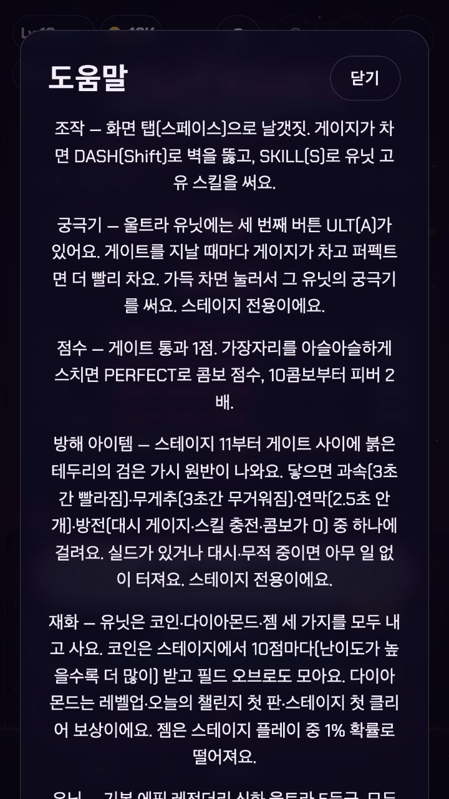